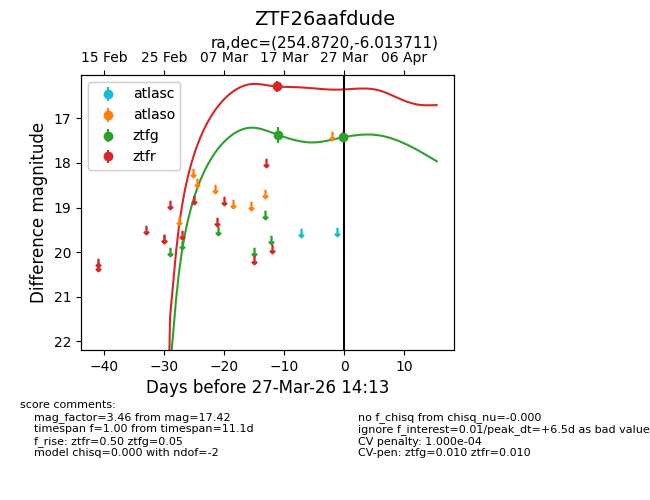
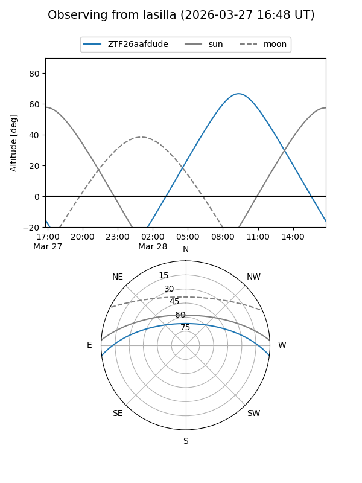
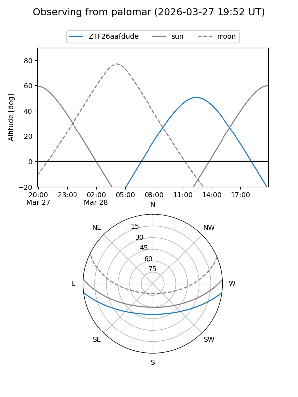
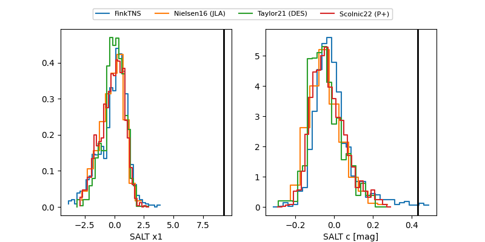

ZTF26aafdude
Target ZTF26aafdude at 2026-03-27 14:16
Aliases and brokers:
FINK: link
Lasair: link
ALeRCE: link
alt names
ZTF26aafdude (ztf,fink_ztf)
Coordinates:
equatorial (ra, dec) = 254.8720,-6.01371
equatorial (HMS+DMS) = 16:59:29.29,-06:00:49.36
galactic (l, b) = (13.7187,+21.56655)
Flags:
likely cv
Photometry:
last ztfg=17.42, ztfr=16.28
2 ztfg, 1 ztfr detections
Lightcurve

Visibility


Additional plots
